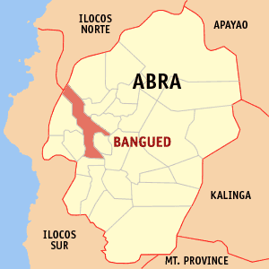
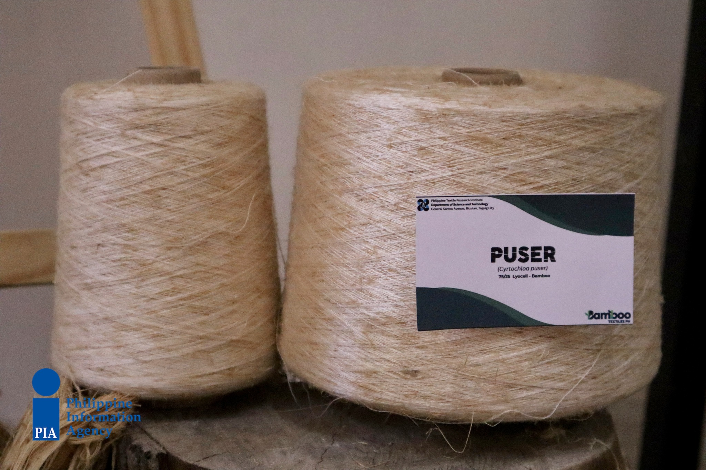

<!DOCTYPE html>
<html>
<meta charset="UTF-8">
<meta http-equiv="X-UA-Compatible" content="IE=edge">
<meta name="viewport" content="width=device-width, initial-scale= 1.0">
<link rel="stylesheet" href="Abra.css">
<title>YCordillera</title>  </html>
<header class="header">
  <a href="#" class="logo">YCORDILLERA AK</a>
  <nav class="navbar">
    <a href="Jacob_Website.html">Home</a>
    <a href="Jacob_Websiteabout.html" onclick="return confirm('Info about the website not the creator')" >About </a>
    <a href="Jacob_Websitecontacts.html">Contact</a>
    <button class="button"><a href="WebsiteSignin.html">Sign in</a></button>
    <button class="button"><a href="WebsiteSignup.html">Sign up</a></button>
  </nav>
</header>
<body>
  
  <p class="homedesc1">Abra is a landlocked province on the Western side of the massive Cordillera in 
    Northern Luzon. Its deep valleys and sloping hills are enclosed by rugged mountains, 
    except in the Western portion where the Abra River flows towards the coastal plains of Ilocos Sur.Abra 
    is referred to as the “Natural Dye Capital of the Philippines” for its abundance of natural dye-producing 
    materials and practices, handed down through generations of the indigenous Itneg/Tingguian people.
  </p>
  <p class="homedesc2">Abra has a total land area of 4,165.25 square kilometres or 1,608.21 square miles. The province is bordered by the 
    towering mountain ranges of the Ilocos in the west and the Cordillera Central in the east. The Abra River runs from 
    the south in Benguet to the west and central areas bisecting the Abra Valley.
  </p>
</body>
<body>
  
  <p class="homedesc3"> The  province of Abra  continues to position  itself as the bamboo capital of the Cordillera.
    Bamboo is used for making basket and other crafts, as construction material, and even takes center stage annually 
    in the Kawayan Festival of the province.</p>
  <p class="homedesc4">
    The Tinguian believe in the presence of spirits in their midst. These spirits, called sasailo, dwell in the
    natural surroundings or move among human beings, and exert influuence on events and activies inhuman society. 
</p>  
<p class="homedesc5">
  The sasailo possess powers and intelligence which are equal or superior to those ofhuman beings, and they 
  become the basis for certain sanctions and prohibitions that must be followed by people, on pain of retribution. 
  They are to be feared and respected. Taking the form of human beings,they move about, aware of everything that
   is going on. The Tinguian classify supernatural beings intothree general categories: spirits who have existed 
   through all the spirits of inferior rank which areneither benevolent nor evil and spirits of ancestors and other
    mortals who are invisible
</p>
      <footer>
        jacobivanfranzrandall@gmail.com . All rights Reserved
      </footer>